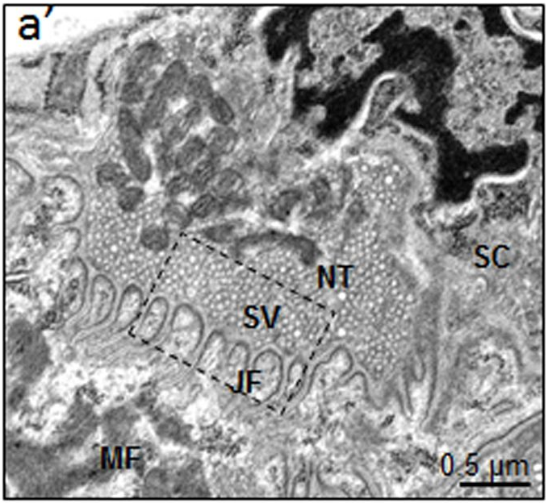
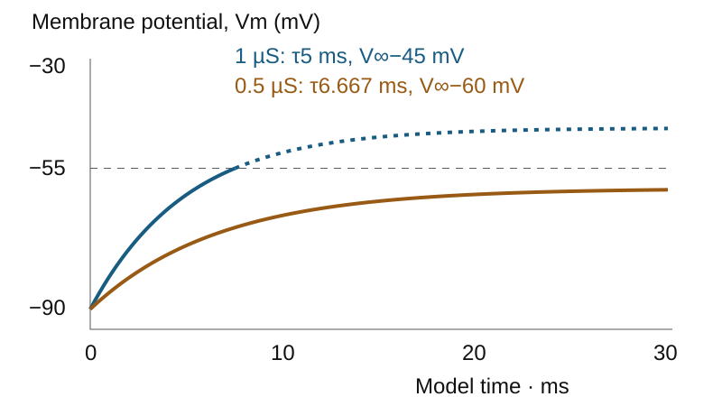

Observed junction · selected conductance model
A real endplate, a conditional response
The micrograph identifies the cells and folded interface. The independent electrical calculation asks whether a selected sustained receptor conductance can bring a passive membrane to a chosen threshold. It is not a voltage recording from this photographed junction.
Separate nerve terminal from muscle

NT: nerve terminal.
SV: synaptic vesicles.
SC: Schwann cell.
JF: junctional folds.
MF: muscle fiber.
0.5 µm: original local source bar.
Focus the source region to pan with arrows/Home/End/Page. Anatomical labels are the authors’ own; no receptor, fusion pore or ACh molecule is newly identified.
Shen et al. (2018), Motoneuron Wnts regulate neuromuscular junction development, Figure4A a′, CC BY 4.0. Postnatal-day-15 control mouse diaphragm, developmental study; not adult human tissue. Glutaraldehyde/PFA, osmium, resin, uranyl/lead TEM. Current owning Figure4v2,1939×1684; exact crop(12,582)–(691,1206),679×624, no resampling/recoloring. Original labels, box and0.5µmbar retained; source90mm≈192ppi print. Full source has separate control/mutant conditions, not stages of one physiological event.
Change sustained receptor conductance

Solid: passive pre-threshold trajectory. Dotted: counterfactual passive continuation after the selected threshold; voltage-gated spike generation is not simulated.
| gACh | V∞ | τ | Threshold | Initial signed IACh |
|---|---|---|---|---|
| 1 µS | −45 mV | 5 ms | 7.520 ms | −90 nA |
| 0.5 µS | −60 mV | 6.667 ms | No finite crossing | −45 nA |
- Identify the nerve terminal and muscle as separate cells.
- Hold capacitance/leak/reversal values fixed; reduce aggregate receptor conductance from1 to0.5µS.
- The passive equilibrium falls below the selected threshold. This conditional failure is a circuit-model deduction, not a diagnosed defect in the photographed control.
Selected circuit: C = 10 nF, gL = 1 µS, EL = −90 mV, EACh = 0 mV, V0 = −90 mV. V∞ = (gL EL + gACh EACh)/(gL + gACh); τ = C/(gL + gACh); Vm(t) = V∞ + (V0−V∞) exp(−t/τ). Signed IACh = gACh(Vm−EACh), outward positive; negative values are inward current, not a negative magnitude.
Conductance is prescribed and sustained; cable geometry, transmitter kinetics, voltage-gated channels and spike propagation are omitted. The −55 mV threshold is a selected example, not a universal EPP voltage. Twelve presentation seconds display thirty selected model milliseconds; neither clock is a measurement from the fixed mouse tissue.
Source, specimen, rights and model assumptions · Reproduction and exact hashes. The calculation implements the independently derived passive circuit in Chapter15; the source TEM supplies anatomy only.